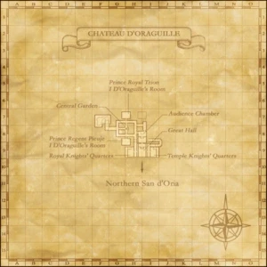

Description
Chateau d'Oraguille is a city area in San d'Oria.
Map

Involved in Quests / Missions
| Quest / Mission | Type | Starter | Location |
|---|---|---|---|
| Enveloped in Darkness | RDM AF2 | Curilla | Chateau d'Oraguille (I-9) |
| Fit for a Prince | General | Halver | Chateau d'Oraguille (I-9) |
| The General's Secret | General | Curilla | Chateau d'Oraguille (I-9) |
| Her Majesty's Garden | Map | Chalvatot | Chateau d'Oraguille (F-7) |
| Knight Stalker | DRG AF3 | Rahal | Chateau d'Oraguille (H-9) |
| Old Wounds | Weapon Skill | Curilla | Chateau d'Oraguille (I-9) |
| Peace for the Spirit | RDM AF3 | Curilla | Chateau d'Oraguille (I-9) |
| Pieuje's Decision | WHM AF3 | Curilla | Chateau d'Oraguille (H-8) |
| Prelude of Black and White | WHM AF3 | Curilla | Chateau d'Oraguille (H-8) |
| The Holy Crest | Job: Dragoon | Arminibit | Port San d'Oria (I-9) |
| Under Oath | PLD AF3 | Trion | Chateau d'Oraguille (H-7) |
| Waking the Colossus | Avatar | Nashmeira | Aht Urhgan Whitegate |
NPCs
| Name | Location | Type |
|---|---|---|
| Aladoverre | (I - 9) | — |
| Aramaviont | (H - 9) | — |
| Arsha | (H - 9) | — |
| Atoranne | (I - 8) | — |
| Chaloutte | (I - 9) | Event Scene Replayer |
| Chalvatot | (F - 7) | Quest Giver |
| Chaphoire | (H - 9) | — |
| Chupaile | (I - 9) | — |
| Cotelle | (H - 8) | — |
| Curilla | (I - 9) | Quest Giver |
| Doumina | (H - 8) | — |
| Faurie | (I - 9) | — |
| Ferdechoind | (I - 9) | — |
 HalverImage source HalverImage source | (I - 9) | Quest Giver |
| Michilca | (G - 8) | — |
| Milchupain | (H - 9) | — |
| Mistaravant | (I - 7) | — |
| Nachou | (H - 8) | — |
| Perfaumand | (H - 7) | — |
| Rahal | (H - 9) | Quest Giver |
Story walkthroughs in this area
| Story | Mission / quest |
|---|---|
| ToAU 5 | Confessions of Royalty |
| WotG 41-1-3 | Her Memories: Grave Resolve |
| WotG 28 | Another World |
References
External references describe their own server or retail rules. Documented Zenith changes take precedence.
Map credits: Map 1 — HorizonXI Wiki. Original game maps © SQUARE ENIX; redrawn maps retain the credited authorship and license.

Additional level-75 reference
|
The home to the Royal d'Oraguille family, the Chateau is complete with living quarters, an audience chamber, a garden and separate quarters for the Temple Knights and Royal Knights, who are commissioned to protect the royal family at all costs. Entry to the Chateau is strictly limited. Beneath the Chateau is the currently unused Bostaunieux Oubliette prison.
Connecting Areas
|
 |

Quests Started Here
| Quest | Type | NPC | Pos | Fame | Reward | Available? |
| Knight Stalker | DRG AF3 | Rahal | H-9 | 2 | Drachen Armet | Check |
| The General's Secret | General | Curilla | I-9 | 2 | Lynx Baghnakhs | Check |
| Fit for a Prince | General | Halver | I-9 | 3 | Castor's Ring or Pollux's Ring | |
| Her Majesty's Garden | Map | Chalvatot | F-7 | 4 | Map of the Northlands Area | Check |
| Old Wounds | WS | Curilla | I-9 | --- | Savage Blade unlocked | Check |
| Enveloped in Darkness | RDM AF2 | Curilla | I-9 | --- | Warlock's Boots | Check |
| Peace for the Spirit | RDM AF3 | Curilla | I-9 | --- | Warlock's Chapeau | Check |
| Prelude of Black and White | WHM AF2 | Door: | H-8 | --- | Healer's Duckbills | Check |
| Pieuje's Decision | WHM AF3 | Door: | H-8 | --- | Healer's Briault | Check |
| Under Oath | PLD AF3 | Trion | H-7 | --- | Gallant Surcoat | Check |

NPCs Found Here
|
|
Adapted from Eden Wiki: Chateau d'Oraguille · Contributors and history · CC BY-SA 4.0. Revision 45609. Layout, links and optional background text adapted for Zenith.